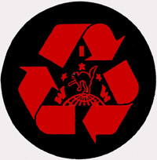

Submitted on Mon, 07/16/2007 - 4:49am
By Oscar the Grouch (with apologies to the Children's Television Workshop)
The following editorial is the opinion of the author, alone.
 The lockout of Garbage Haulers in the East Bay is entering its third week. Waste Management is waging blatant class war on the garbage workers and working people of Alameda County in the east Bay Area.
The lockout of Garbage Haulers in the East Bay is entering its third week. Waste Management is waging blatant class war on the garbage workers and working people of Alameda County in the east Bay Area.
The following article, featured in a recent issue of Socialist Worker makes it clear that Waste Management planned to bust the union from the get-go.
Worse still, the San Francisco Chronicle reports that Waste Management is ordering scab drivers to pick up trash in rich neighborhoods while ignoring the residents in poor and working class neighborhoods, subjecting the working class to disease and pestilence.
Submitted on Fri, 05/25/2007 - 10:56am
 Four years ago the Bay Area IWW was contacted byworkers at the East Bay Depot for Creative Reuse in Oakland. They had numerous grievances and decided union membership would be a way to bring their concerns to management. Eventually the workers voted unanimously for the IWW.
Four years ago the Bay Area IWW was contacted byworkers at the East Bay Depot for Creative Reuse in Oakland. They had numerous grievances and decided union membership would be a way to bring their concerns to management. Eventually the workers voted unanimously for the IWW.
During and after the union organizing campaign management took a very mean spirited approach to the union workers. Including harassment, intimidation, firing and forcing workers to quit. On top of the union busting strategy the company lost grant money to run an art outreach program to local schools. This development caused four workers to be laid off. Eventually, the union walked away from the bargaining table as nearly all the workers were laid off, fired or quit. Unfair Labor Practice charges were filed but had little effect.
Submitted on Mon, 01/08/2007 - 12:59am
 Berkeley, California
Berkeley, California - IWW Curbside Recyclers at the Berkeley Ecology Center won a small, but important victory Friday, January 5, 2007 by sticking to their guns and refusing to let management violate their IWW union contract.
Currently, all Saturday work must be paid at time-and-one-half standard wages, except work performed before 8:00 AM and after 5:00 PM, which must be paid at double-time (Article VII, Section C, Part 1). The same rules apply for Sunday work. Weekend work is rare, and is usually scheduled the same week as non-working holidays (Thanksgiving, Christmas, and New Years' Day).
Prior to 2001, the workday began at 8 AM and ended at 5 PM. In 2001, the start time was moved up to 6:30 AM by mutual consent by Management and the Union, but the Saturday and Sunday work rules remained unchanged as an incentive to schedule weekend work as little as possible.
Submitted on Sat, 11/11/2006 - 12:54pm
Last month, one dozen recyling drivers and loaders at the Ecology Center (in Berkeley California), approved their latest IWW Union contract. The recyclers are part of Municipal and Utility Service Workers Industrial Union 670, and the shop has been part of the IWW since 1989. Next door, the Berkeley Community Conservation Center's Buyback Recycling Shop has been with the union since 2000.
The new contract includes several modest gains, including:
- a 3% Across the Board increase in hourly wages, retroactive to January 1, 2006 and an additional 3% ATB wage increase effective January 1, 2007.
- All recyclers, including loaders, receive a guaranteed 8-hours pay for each shift worked. Previously only drivers received that benefit.
- All recyclers, including loaders, shall receive reassignment bonuses. Previously only drivers received that benefit.
- Confusing language regarding employee status with numerous conflicting categories, such as "probationary", "temporary", "full time", "part time", and "short hour" has been replaced with clear, solid language with three well defined categories of "regular", "on call", and "probationary".
- New, probationary employees recieve "peer review" from their fellow workers, removing some of the hiring power from management.
- Recyclers receive a modest increase in periodic work boot allowances.
- All regular employees who work a minimum number of shifts receive full health care & dental coverage.
- Now teams can receive weight bonuses whereas previously only solo drivers received bonuses.
The contract also has no significant concessions. The biggest concession demanded by management was an increase in individual Health Care co-payments from $5 to $35 per visit and/or prescription. The Union managed to fight that demand.
Submitted on Fri, 07/01/2005 - 7:57am
BERKELEY- Workers at the Ecology Center in Berkeley, known as Curbside, welcomed their new operations manager Friday July 1st, with a meeting to discuss their expectations of his conduct. As the new boss sat and listened, Fellow Workers Todd Miller and Dominic Moschella outlined their complaints.
Dominic handed over a maintenance sheet on every Curbside truck, filled out by the workers. “We want to see all the safety issue stuff taken care of within a week,” said Dominic.
Many of the trucks at Curbside have missing mirrors, broken turn signals, and bad rear view cameras. Many trucks are so old that they break down frequently, forcing the workers to complete their routes with fewer trucks.
“If there were an inspection, most of those trucks wouldn’t even leave the lot,” Todd told the boss.
The workers expect the safety issues to be corrected within a week, and non-safety issues to be cleared up within a reasonable time period.
The workers told the boss they wouldn’t tolerate management driving routes. “We voted unanimously,” said Todd. “Those are union jobs, and management should not be doing union work.”